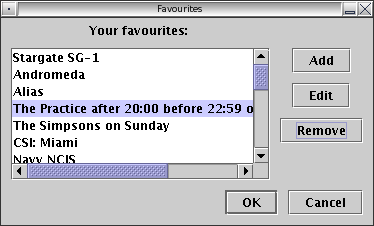
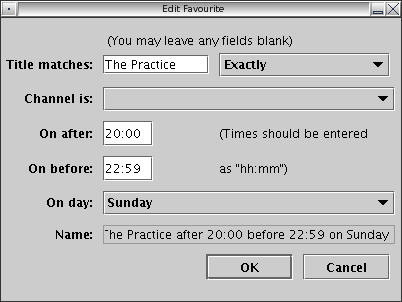
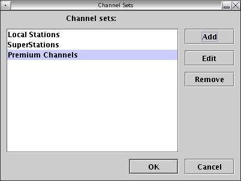
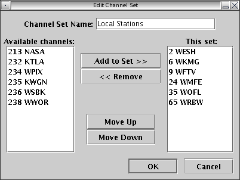
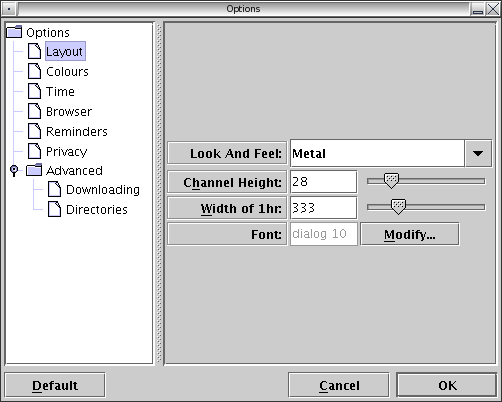
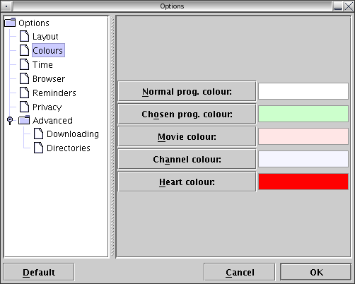

Home | README | FAQ | User Guide | Look and Feel Guide | Timezones | Developers | Design Document | Linux XMLTV Install | Contributors
FreeGuide Screen Shots
Contents
Main Application Window

Favourites Dialog

Edit Favourite Dialog

Channel Sets Dialog

Edit Channel Set Dialog

Options Dialog

Options Dialog, Colours Pane
